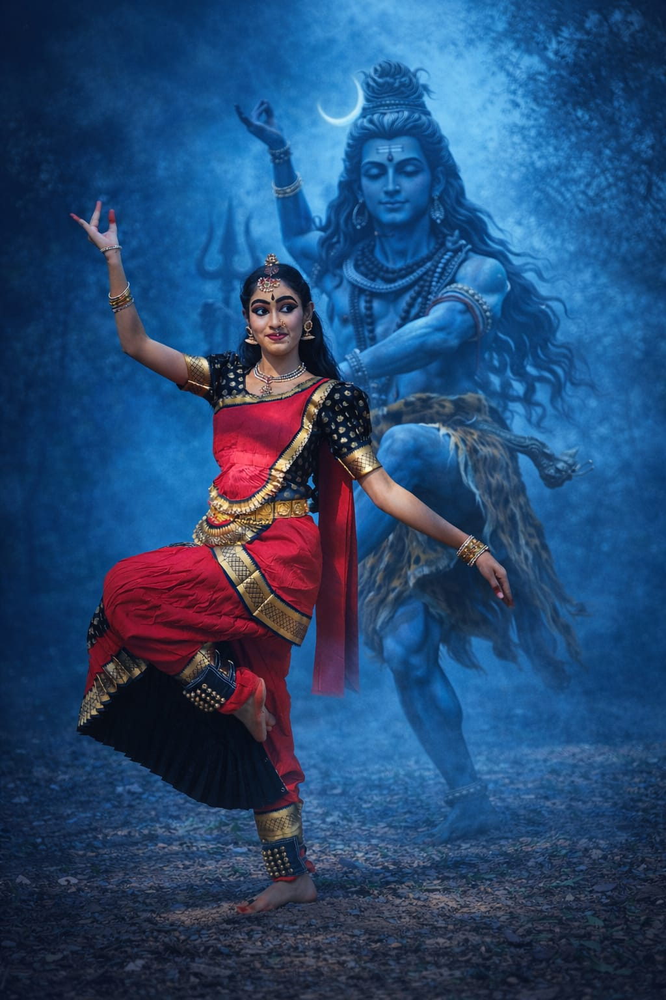
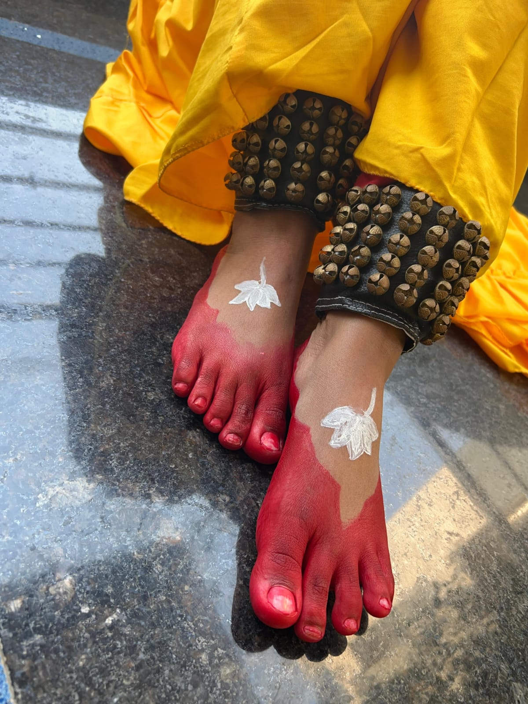
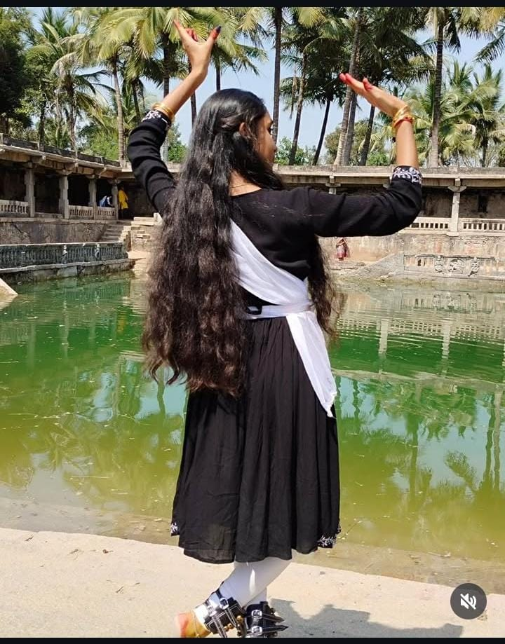

Story of Kuchipudi
Kuchipudi dance originated from a small village called Kuchipudi in Andhra Pradesh and was traditionally performed as dance drama.
Indian classical dance preserves culture, mythology and storytelling. Through expressions, rhythm and gestures dancers communicate emotions and divine stories.
Origin: Andhra Pradesh
Village: Kuchipudi village
Style: Dance & drama combination
Special Feature:
Dancing on brass plate
Expressive storytelling
Costume:
Traditional silk costume
Temple jewellery
Purpose:
Narrates mythological stories
Especially Krishna stories



Click below to learn Kuchipudi Mudras
Kuchipudi dance originated from a small village called Kuchipudi in Andhra Pradesh and was traditionally performed as dance drama.
Explore Kuchipudi performances and learn dance movements.